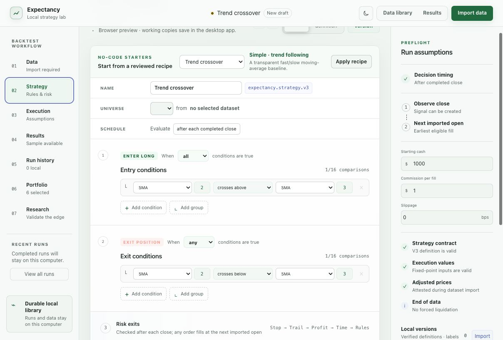

01
Interpretation
A backtest answers a conditional statement: given the imported observations, the selected calendar and universe, the stated strategy document, and the configured execution model, what sequence of decisions and accounting transitions does the engine produce?
The result is therefore conditional on model structure and data quality. It does not estimate causal effect, establish market predictability, or demonstrate that an order could have been executed at the simulated price and quantity.
Return, drawdown, Sharpe-like measures and win rates are properties of one historical simulation. They must be read with the tested interval, trial count, costs, universe construction and out-of-sample evidence.
02
Data identity and provenance
The importer reads CSV or compressed Parquet and produces a canonical, immutable local representation only after blocking checks pass. The original source is not modified. A content identity binds the source receipt, column mapping, normalized observations and validation outcome.
Minimum observation fields
symbolInstrument identifierNon-empty, explicit mappingsession_dateTrading-session observationOrdered and calendar-resolvedopen high low closeOHLC price tupleFinite, coherent, fixed-scale valuesvolumeObserved traded quantityNon-negative canonical valueDuplicate observations, incoherent OHLC ranges, invalid numbers, unsupported dates and ambiguous mappings are resolved or rejected before publication. Missing point-in-time universe or corporate-action lineage is surfaced separately; it is not inferred from price data.
03
Time, calendars and event ordering
Strategies observe completed bars. A decision created after a close cannot receive an earlier price. The earliest normal market fill is the next eligible imported open, subject to the configured calendar, order type, liquidity and capital constraints.
- tObserve
Close the current bar and update indicators using only observations available at that boundary.
- t+Decide
Evaluate the typed strategy tree and emit a decision with its exact supporting values.
- t+1Attempt
Submit the order to the next eligible event and apply order, price, volume and capital rules.
- t+1Account
Record fills, fees, positions, cash and ledger transitions in stable event order.
Reviewed calendars currently cover XNYS 2025–2028, XNAS 2025–2026 and XLON 2026. Calendar resolution fails closed outside reviewed coverage. Multi-asset simulations use one shared event clock and explicit missing-bar states.
04
Numerical representation
Financial quantities are represented using checked fixed-point integers with declared scales. Arithmetic is checked for overflow; rounding occurs only at specified boundaries. Floating-point values are not used as the authoritative financial state.
Prices and cash
Canonical decimal text is parsed to a fixed scale, preserving deterministic comparison and aggregation.
Rates
Percentages and basis-point inputs retain their declared units and are rejected when their domain is ambiguous.
Metrics
Reported ratios are derived from canonical ledger and equity records rather than maintained as parallel mutable state.
Reproduction
Identical valid inputs and software identity must produce the same financial and evidence fingerprints.
05
Execution model
The execution model is an explicit experimental assumption. It supports market, limit, stop and stop-limit lifecycles; whole-share sizing modes; long and short positions; volume participation; partial fills; spread, slippage and market impact; commission and borrow costs; leverage and maintenance-margin rules; and selected raw corporate actions.

Signal logic, fill timing, costs and liquidity remain distinct, reviewable parts of the experiment.
Open full-size screenshot ↗These controls increase model specificity; they do not make simulated liquidity equivalent to historical order-book reconstruction. Bar data cannot determine the unique intrabar path when several trigger prices are crossed. Such cases require a documented policy or a preflight failure.
06
Result evidence
A completed run retains canonical evidence tables rather than only summary metrics. The single-symbol and portfolio paths expose bounded pages of observations, indicator values, decisions, orders, fills, trades, positions, cash-ledger entries, equity and diagnostic findings.
Each link is navigable to a dated source observation where the required evidence exists. The immutable result identity changes when bound data, strategy, execution assumptions or canonical result content changes.
07
Research validation
Expectancy distinguishes an in-sample simulation from evidence about stability or generalization. The research workspace records chronological folds, sealed holdouts, parameter families, candidate counts, failed trials, benchmark identity and multiple-testing disclosures.
Required evidence present
The exact artifact contains enough verified information to evaluate the stated check.
Evidence indicates a risk
The finding identifies its supporting values, likely impact and a concrete next action.
Required evidence absent
No conclusion is produced. Absence is not converted into a favourable state.
No blended “trust score” is produced. Distinct questions—data lineage, cost sensitivity, parameter stability, temporal holdout and benchmark-relative behaviour—remain separate so their assumptions remain visible.
08
Failure and interruption semantics
Invalid inputs fail before simulation with actionable diagnostics. Cancellation, process termination and output-limit failures cannot create a completed-looking result. Durable run storage distinguishes completed, failed, interrupted, cancelled and corrupt states.
The implementation is bounded: requests, evidence pages, formula trees, rule graphs, worker processes, result output and estimated working memory have explicit limits. These limits are part of the scientific contract because silent resource exhaustion can alter which experiments are observed and retained.